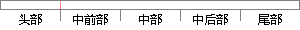

每种异常模式下都有自己对应的SP和LR两个寄存器，分别用来存放堆栈指针和断点地址。
片段位置图

相似结果
相似片段：[图文]从异常向量地址开始执行也可以进入ARM状态。 n ARM处理器的寄存器组织 ARM处理... 寄存器R13通常用作堆栈指针,称作SP。每种异常模式都有自己的分组R13。通常R13...
| 标题 | 《ARM处理寄存器与用户模式_lift_新浪博客》 |
| 对比库 | PaperRater云论文库 |
| 网址 | http://blog.sina.com.cn/s/blog_62606f220100l0g0.html |
| 相似率 | 60% （轻度抄袭） |
※ 片段修改建议 ※
近似词参考：- 分别：别离 划分 离别
- 异常：非常 异样
- 自己：本身
- 堆栈：仓库 货仓 货仓旅馆 客栈
- 地址：地点
- 存放：寄存 寄放
系统自动生成语句： 每种非常模式下都有本身对应的SP和LR两个寄存器，别离用来寄存仓库指针和断点地点。
注：本片段修改建议为系统自动生成，仅供参考。